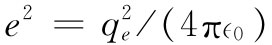
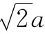
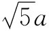
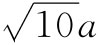
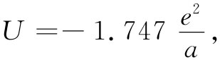

现在，我们来考虑静电能概念在原子物理中的一种应用。原子间的作用力，一般不易测量，但人们对原子的两种不同排列之间的能量差——比如说，化学反应的能量——却经常感兴趣。由于原子力基本上是电力，所以化学能大部分都是静电能。
例如，让我们考虑一离子晶格的静电能。像NaCl那种离子晶体，组成它的正离子和负离子都可以设想成刚性球体。它们由于电的作用而吸引，直至开始接触，然后出现一种排斥力。这时，若是试图将它们推得更加接近，则这种排斥力就会很快增大。
因此，作为我们的第一级近似，设想用一组刚性球体来代表食盐晶体里的原子。其晶格结构，已用X射线衍射法确定。它是一个立方晶格，像一个三维棋盘。图8-5所示为其一个截面图像。离子间的间隔为2.81Å（=2.81×10-8 cm）。
图8-5 在原子尺度上的食盐晶体的截面。Na和Cl两种离子跳棋盘式的排列着，与此垂直的两个横截面上情况也一样（参考第1卷，图1-7）
这一系统的图像如果是正确的，那我们就可以通过提出如下问题而加以核对：把这些离子完全拉开——也就是，把晶体完全拆开成各离子——将需要多少能量？这一能量应等于NaCl的汽化热加上使分子分解成离子所需的能量。这个把NaCl分解成离子的总能量，在实验上已经确定为每个分子需7.92eV。通过换算
1eV=1.602×10-19 J，
以及1mol的分子数，即阿伏伽德罗常量
N0 =6.02×1023 ，
也可以给出汽化能为
W=7.64×105 Jmol-1 .
物理化学家喜欢用kcal作为能量单位，每kcal等于4190J，所以1eV/分子就是23kcalmol-1 . 于是，化学家会说NaCl的离解能为
W=183kcalmol-1 .
我们能否通过计算将晶体拉开所需的功，从而在理论上得到这个化学能呢？按照我们的理论，这个功就是所有离子对的势能和。计算这个和的最容易的办法，是先挑选一个特定离子，再算出它与其他每个离子之间的势能。这将给予每个离子两倍 的能量，因为这能量是属一对 电荷的。而我们所要的乃是属于某一特定离子的能量，所以应取这个和的一半。但我们真正要的却是每个分子 的能量，而每一分子含有两个离子，因而这样算出来的和就将直接给出每个分子的能量。
一个离子与它最近邻的离子的能量为e2 /a，其中 ，而a为两近邻离子的中心间距（这里所考虑的是单价离子）。这个能量为5.12eV。我们已看到，它为我们提供了一个具有正确数量级的结果，但距我们所需的无限多项之和，还有一段很长的距离。
开始，我们对那些在直线上的离子的所有项求和。图8-5中标明为Na的那个离子是我们考虑的特定离子。现在将首先注意与它同在一条水平直线的那些离子，有两个带负电荷的Cl离子靠它最近，每个距离均为a；随后有两个在2a距离处的正离子；依此类推。把这个和的能量叫做U1 ，就可以写出：
这一级数收敛缓慢，因而难于用数字算出，可是已经知道它等于ln2。因此，
现在再来考虑位于上面的那条次近邻离子线，最靠近它的一个是负离子，距离为a；随后又有两个正离子位于距离 处；下一对位于距离 处，再下一对则是位于 处，依此类推。所以，对于这整条线就得到一个级数：
这样的线总共有四条 ：在上面、下面、前面和后面。然后，又有四条在对角线上的最靠近的线，如此等等。
如果你耐心地算出所有这些线的值，然后取其和，则将求得总和为：

这比起在式（8.20）中对第一条线所得的结果仅稍微大一点。利用e2 /a=5.12eV，我们得到：
U=-8.94eV.
这答案比实验上观察到的能量要高10%。这表明关于整个晶格是由电的库仑力维持在一起的观点基本上是正确的。这是我们第一次从原子物理的知识中获得有关宏观物质的一种特殊性质，往后还要处理更多的问题。利用原子行为的定律来理解大块物质行为的学科叫做固体物理学 。
计算上的误差怎么会出现的呢？为什么它不是完全正确的呢？那是由于在近距离处离子间的排斥作用造成的。它们并不是理想的刚球，因而当互相靠近时，将部分地被压缩。它们也并非很柔软，因而仅被压缩了一点点。可是，有些能量是用于使离子变形的，而当离子被拉开时，这能量被释放出来。拉开离子所需要的实际能量比我们算出的要稍微少一点。这种排斥作用有助于克服静电的吸引作用。
有没有办法对这一项贡献做出估计呢？只要我们知道有关排斥力的定律，就可能做到这一点。虽然目前我们不准备对这种排斥机制的细节进行分析，但可以从某些宏观测量结果获得有关它的特性的某种概念。对整块晶体压缩率 的测量结果，就有可能得到有关离子间排斥定律的定量概念，从而获得它对能量的贡献。用这种方法已经求得这项贡献应等于来自静电吸引的贡献的1/9.4，当然符号相反。如果从纯粹的静电能量减掉这一贡献，便可得出每个分子的离解能为7.99eV。这与7.92eV的观测结果已较接近了，但仍未完全相符。还有另一件我们没有算进去的东西，那就是对于晶体振动的动能还未作出估计。若对这一效应也做出修正，就可获得与实验值符合得很好的结果。因此，上述概念是正确的，对于像NaCl这种类晶体的能量的主要贡献是静电方面的贡献。